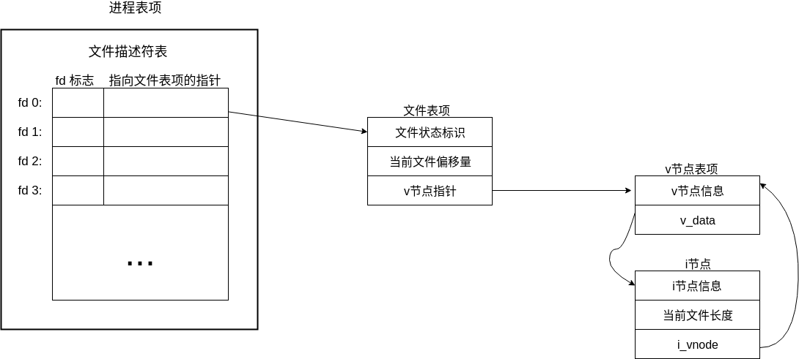
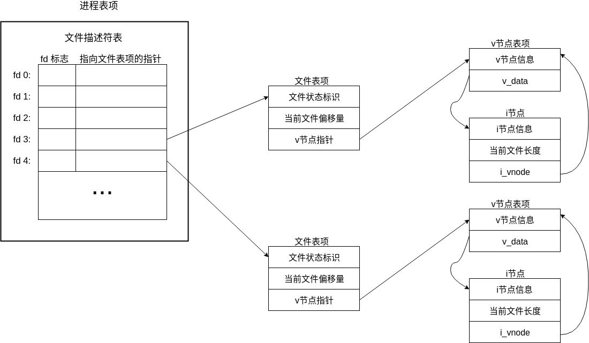
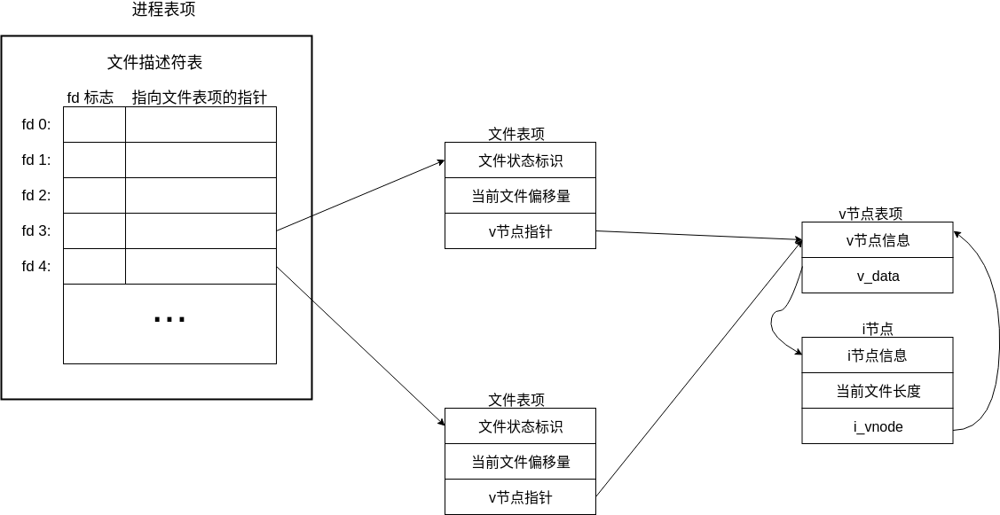
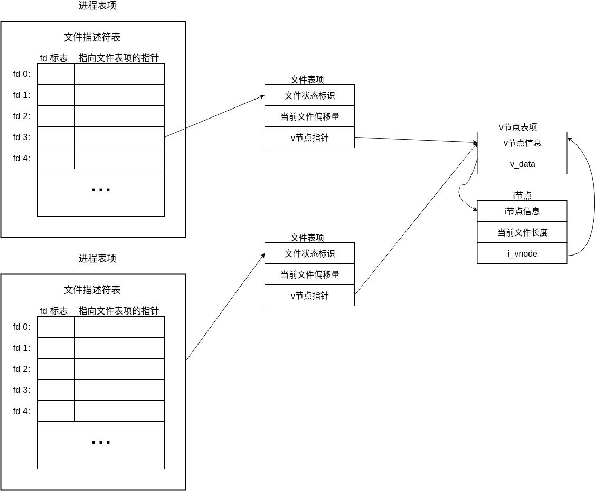
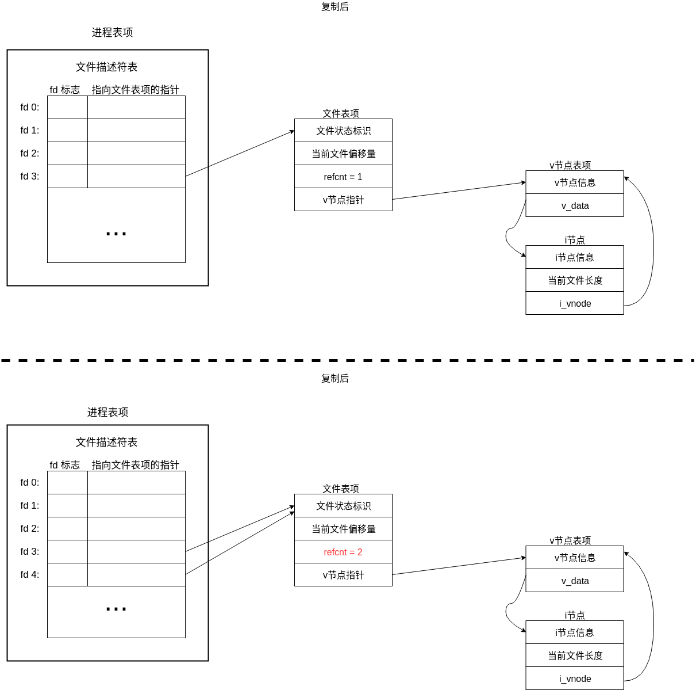

Linux系统编程:文件_深入理解进程描述符
每个进程中都维护着一张文件描述符表，里面存放的是 文件描述符 以及 指向内核维护的一张文件表中的一项的指针。（文件表中的一项，在 《Linux/Unix系统编程手册》 中称为 文件句柄，在 《Unix环境高级编程》 中称为 文件表项）
文件表项的内容包括：
- 当前文件的偏移(read()、write()调用会更新偏移量，或者使用lseek()直接修改)
- 打开文件时的状态标志(O_RDONLY等)
- 文件访问模式(S_IRUSR、S_IWUSR等)
- 与信号驱动相关的配置
- 对i-node对象的引用
每个 文件表项 都会有一个指向 i-node表中的一个i-node对象 的指针。内核会在内存中 映射一份文件系统中的i-node表。
每个i-node对象中的内容包括：
- 文件类型(如常规文件、套接字、FIFO)和访问权限
- 指向该文件所持有的锁的列表
- 文件的各种属性，包括文件大小以及与不同类型操作相关的时间戳。
(以上描述都出自 《Linux/Unix系统编程手册》，和APUE上略有不同，最大的不同在于，前者将文件表中的一项定义为 文件句柄，后者将其定义为 文件表项。)
下图是 《Linux/Unix系统编程手册》 中对文件描述符阐述的一张图：

上图如果不详细声明，文件表中的每一行都是一个文件的文件表项，就很容易引起误解，让人误认为 不同进程在操作文件时，指向的是同一文件表项，则会使用相同的偏移量。(好吧，我知道就我这么认为的...)
下图是 《Unix环境高级编程》 中对文件描述符阐述的一张图：

APUE中明确的表示，进程每次对文件的操作，都会新建一个文件表项，它把文件表项单独的提出来，更加形象具体了。多出来的v节点包含的内容其实和 《Linux/Unix系统编程手册》 中介绍的没多大出路。
下面的测试代码都会以 APUE 中的描述来实现。
同一进程，打开多个文件

进程会分配两个文件描述符分别指向不同的文件表项，文件表项对应的V节点也不同。
同一进程，打开同一文件多次

每次open调用，都会新建一个文件表项，记录各自打开文件的偏移等信息，两个文件表项都指向同一个v节点。
#include <stdio.h>
#include <fcntl.h>
#include <unistd.h>
int main(int argc, char *argv[]) {
const char *test_name = "01_test";
// fd1 只是读取
int fd1 = open(test_name, O_RDONLY, 0666);
if (fd1 == -1) {
printf("fd1 open fail!");
_exit(0);
}
char buf[5];
if (read(fd1, buf, 5) == -1) {
printf("fd1 first read fail!");
_exit(0);
}
printf("fd1 first read -> %s\n", buf);
// fd2 写入一些东西
int fd2 = open(test_name, O_WRONLY, 0666);
if (fd2 == -1) {
printf("fd2 open fail!");
_exit(0);
}
char *write_buf = "aaaaa";
lseek(fd2, 0, SEEK_END);
if (write(fd2, write_buf, 5) == -1) {
printf("fd2 write fail!");
_exit(0);
}
close(fd2);
// fd1 继续读取内容，如果内容为fd2写入的内容
// 则说明两个open使用的是不同的文件表项
if (read(fd1, buf, 5) == -1) {
printf("fd1 second read fail!");
_exit(0);
}
printf("fd1 second read -> %s\n", buf);
close(fd1);
return 0;
}
输出如下，说明了 同一进程，对相同的文件打开两次，会创建两张文件表项，各自含有各自的文件偏移。
// 文件内容
$ cat 01_test
hello
$ ./test
fd1 first read -> hello
fd1 second read -> aaaaa
不同进程打开同一文件

不同进程打开同一文件和上一个的处理方式一致。
复制文件描述符

使用dup命令复制文件描述符时，会保留原始的文件描述符，新的文件描述符和之前的文件描述符同时指向同一个文件表项，同时，文件表项中的文件计数+1。
#include <stdio.h>
#include <fcntl.h>
#include <unistd.h>
int main(int argc, char *argv[]) {
const char *test_name = "02_test";
// fd1 只是读取
int fd1 = open(test_name, O_RDONLY, 0666);
if (fd1 == -1) {
printf("fd1 open fail!");
_exit(0);
}
// fd2 对 fd1 进行了复制
int fd2 = dup(fd1);
if (fd2 == -1) {
printf("fd2 dup fail!");
_exit(0);
}
// fd1 先读取5个字节
char buf[5];
if (read(fd1, buf, 5) == -1) {
printf("fd1 read fail!");
_exit(0);
}
printf("fd1 read -> %s\n", buf);
// fd2 也读取5个字节，如果两次读取的内容与文件中的一致
// 那么说明fd2和fd1使用了同一个文件表项
if (read(fd2, buf, 5) == -1) {
printf("fd2 first read fail!");
_exit(0);
}
printf("fd2 first read -> %s\n", buf);
// 先关闭fd1
close(fd1);
// 此时，如果fd2还能读取文件内容，说明之前文件表项中的计数为二
if (read(fd2, buf, 5) == -1) {
printf("fd2 second read fail!");
_exit(0);
}
printf("fd2 second read -> %s\n", buf);
close(fd2);
return 0;
}
输出结果如下，fd2第一次输出了fd1改变后的偏移量后面的文件内容，fd1关闭后，fd2仍能使用。
$ cat 02_test
0123456789hello
$ ./test
fd1 read -> 01234
fd2 first read -> 56789
fd2 second read -> hello